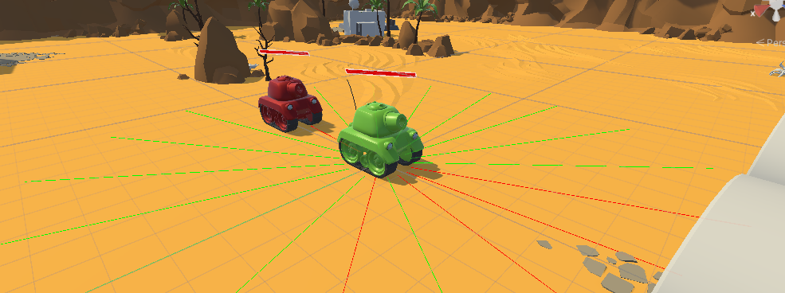

Use Case 2
Reach and shoot a static target
Use Case 2 integrates with the Gym library to create a simulation environment for reach and shoot a static target. The environment is designed to be used with reinforcement learning algorithms, allowing agents to learn to navigate and shoot a target autonomously.
Note
The rays in red appear when we are touching an object, which happends when an object is at a distance equal or smaller than 10 m to the tank, otherwise they are green.
Objectives
Provide a customizable environment for reaching and shooting a target that does not move using ROS and Gym.
Facilitate integration with reinforcement learning algorithms by defining observation, reward, and state management methods.
Implement a training script that uses the Stable Baselines 3 library to train agents in the environment. It uses configuration files to try different algorithms, architectures, and hyperparameters.
Develop a test script to validate the environment’s functionality and behavior.
UC2Environment Class
The class UC2Environment is defined, that inherits from EnvironmentNode and configures a Gym environment with specific parameters defining the observation, action spaces,and the reward range. These configurations are crucial for defining the interaction between the agent and the environment, ensuring that both the agent’s actions and the feedback it receives are appropriately scaled and represented.
Initialization
__init__(self, environment_id: int): This constructor initializes the environment by setting up ROS parameters and Gym environment parameters.
ROS Initialization: Calls the parent class constructor (EnvironmentNode.__init__) to set up the ROS environment with specific message types and environment identifiers.
EnvironmentNode.__init__( self, environment_name="uc2_environment", environment_id=environment_id, step_service_msg_type=UC2EnvironmentStep, reset_service_msg_type=UC2EnvironmentReset, )Gym Environment Initialization:
Observation Space: Defines the observation space with a shape of 27, as it adds to the observation space of Use Case 1 the turrent angle and the normalized health, and a range from
-1.0to1.0.self.observation_space = gym.spaces.Box( low=-1.0, high=1.0, shape=(27,), dtype=np.float32 )Action Space: Defines the action space with a shape of 4, corresponding to the already defined linear and angular velocity in Use Case 1 the capacity to fire/not fire and the angle of the turret, and a range from
-1.0to1.0.self.action_space = gym.spaces.Box( low=-1.0, high=1.0, shape=(4,), dtype=np.float32 )Reward Range: Establishes a reward range from
-1.0to1.0.self.reward_range = (-1.0, 1.0)Environment Parameters: Sets various parameters related to velocity, yaw rate, and episode time limits:
self._min_linear_velocity = -5.0 self._max_linear_velocity = 5.0 self._max_yaw_rate = 5.0 self._max_episode_time_seconds = 60.0 self._episode_start_time_seconds = NoneVariables for tracking the target distance, already present in Use Case 1, and health of the units are also initialized:
self._current_target_distance = None self._previous_target_distance = None self._current_health_normalized = None self._previous_health_normalized = None self._current_target_health_normalized = None self._previous_target_health_normalized = None
Methods
convert_action_to_request(self, action: np.ndarray = None): Converts the Gym values into a ROS request format, scaling and mapping the action parameters to the ranges and formats required by the appropriate ROS message fields.
Action Scaling: Converts the action values from the Gym environment to the ROS message format by scaling them according to the specified ranges:
Linear Velocity: Scales action[0] from the range [-1.0, 1.0] to the range [self._min_linear_velocity, self._max_linear_velocity].
Yaw Rate: Scales action[1] to the range [0.0, self._max_yaw_rate].
Turret Target Angle: Scales action[2] from the range [-1.0, 1.0] to the range [0.0, 360.0].
Fire: Sets the fire flag to True if action[3] is greater than 0.5, otherwise False.
Request Population: Fills the ROS request message fields with the scaled action values.
def convert_action_to_request(self, action: np.ndarray = None): # action = np.array([linear_velocity, yaw_rate, turret_target_angle, fire]) # Scale the action to the range [self._min_linear_velocity, self._max_linear_velocity] when action[0] is in the range [-1.0, 1.0] linear_velocity = (action[0] + 1.0) * (self._max_linear_velocity - self._min_linear_velocity) / 2.0 + self._min_linear_velocity yaw_rate = action[1] * self._max_yaw_rate # Scale the action to the range [0.0, 360.0] when action[2] is in the range [-1.0, 1.0] turret_target_angle = (action[2] + 1.0) * 360.0 / 2.0 fire = bool(action[3] > 0.5) # Fill the step request self.step_request.action.tank.target_twist.y = linear_velocity self.step_request.action.tank.target_twist.theta = yaw_rate self.step_request.action.tank.turret_actuator.target_angle = turret_target_angle self.step_request.action.tank.turret_actuator.fire = fire return self.step_request
In this User Case, we are adding when comparing to Use Case 1, the turret angle and the action of fire/not fire.
convert_response_to_state(self, response): Transforms the ROS response into a format suitable for Gym, returning the current state of the environment from the ROS response and ensuring that it is in a format that can be used within the Gym environment.
It extracts the state attribute from the ROS response, which represents the current state of the environment. This ensures that the state information is formatted correctly for use in the Gym environment.
def convert_response_to_state(self, response): return response.state
reset(self): Resets the environment to its initial state, preparing it for a new episode by updating the episode start time and clearing previous values related to target distance and health. It also calls the
resetmethod from the parent class (EnvironmentNode) to ensure any additional reset procedures defined in the parent class are also executed.Episode Start Time: Updates the start time of the episode using the current time. This is used to track the elapsed time during the episode.
self._episode_start_time_seconds = time.time()
Clear Previous Values: Resets the previous values for target distance, already present in Use Case 1, and agent and target health to None. These values are used to compute rewards and determine the state of the environment.
self._previous_target_distance = None self._previous_health_normalized = None self._previous_target_health_normalized = None
Call Parent Class Reset: Calls the reset method from the parent class (EnvironmentNode) to ensure any additional reset procedures defined in the parent class are also executed.
return super().reset()
observation(self, state) -> np.ndarray: Provides the current observation based on the environment’s state.
Target Relative Position: Computes the relative position of the target in the global coordinate system by subtracting the tank’s position from the target’s position. This position is then adjusted for the tank’s yaw using a rotation transformation.
target_relative_position = np.array([ state.target_pose.x - state.tank.pose.x, state.target_pose.y - state.tank.pose.y, 0.0 ]) yaw = state.tank.pose.theta r = Rotation.from_euler('z', yaw) target_relative_position = r.apply(target_relative_position) target_relative_position = target_relative_position[:2]
Normalizing the target’s relative position based on the distance to ensure it falls within a specific range. If the distance is less than 1.0, the position is used as is; otherwise, it is scaled to be within the range [0, 1].
self._current_target_distance = np.linalg.norm(target_relative_position) target_relative_position_normalized = target_relative_position if self._current_target_distance < 1.0 else target_relative_position / self._current_target_distance
Linear and Angular Velocities: Normalized to fit within a specified range.
linear_velocity_normalized = (state.tank.twist.y - self._min_linear_velocity) / (self._max_linear_velocity - self._min_linear_velocity) * 2 - 1 angular_velocity_normalized = state.tank.twist.theta / self._max_yaw_rate
Lidar Data: Normalizes the lidar data to fit within the range [0, 1] based on the minimum and maximum range values.
ranges = np.array(state.tank.smart_laser_scan.ranges) lidar_ranges_normalized = (ranges - state.tank.smart_laser_scan.range_min) / (state.tank.smart_laser_scan.range_max - state.tank.smart_laser_scan.range_min)
Health Information: Normalized both for the agent’s and the target’s health. In Use Case 1 it was normalized only for the agent’s health.
self._current_health_normalized = state.tank.health_info.health / state.tank.health_info.max_health self._current_target_health_normalized = state.target_health_info.health / state.target_health_info.max_health
Turret Information: Normalizes the turret’s angle, cooldown (time remaining before the turret can fire again), and firing status. This did not exist in Use Case 1 as we were only navigating in the environment and not reaching and shoooting a static target.
turret_angle_normalized = state.turret_sensor.current_angle / 360.0 turret_cooldown_normalized = state.turret_sensor.cooldown * state.turret_sensor.fire_rate turret_has_fired = 1.0 if state.turret_sensor.has_fired else 0.0
Note
Combined Observation: Concatenates all these normalized values into a single observation array that represents the state of the environment.
observation = np.concatenate([ target_relative_position_normalized, [linear_velocity_normalized], [angular_velocity_normalized], lidar_ranges_normalized, [self._current_health_normalized], [self._current_target_health_normalized], [turret_angle_normalized], [turret_cooldown_normalized], [turret_has_fired] ]) return observation
reward(self, state, action: np.ndarray = None) -> float: Computes the reward as a floating-point value for the agent based on the current state of the environment and actions taken. It is computed as follows:
Health Change Reward between the current normalized health of the agent and the previous one. If there is no previous health value, the reward is set to 0.0.
health_change_reward = self._current_health_normalized - self._previous_health_normalized if self._previous_health_normalized is not None else 0.0
Target Health Change Reward: This reward is based on the change in the target’s health. It is calculated as the Health Change Reward.
Distance Change Reward. This reward reflects the change in distance to the target, but only if the current distance is greater than 4.0. If the previous target distance is not available, or the current distance is too small, the reward is set to 0.0.
distance_change_reward = self._previous_target_distance - self._current_target_distance if self._previous_target_distance is not None and self._current_target_distance > 4.0 else 0.0
Has Shot Reward, which is determined by the action value at index 3. If this value is greater than 0.5, the agent receives a reward of -0.1.
has_shot_reward = -0.1 if action[3] > 0.5 else 0.0
Note
- Total Reward:
The total reward is the sum of all individual rewards calculated above. The previous values for target distance, agent health, and target health are updated for use in the next step of the episode.
reward = 0.0 reward += health_change_reward reward += target_health_change_reward reward += distance_change_reward reward += has_shot_reward
Finally, the method returns the computed reward.
self._previous_target_distance = self._current_target_distance self._previous_health_normalized = self._current_health_normalized self._previous_target_health_normalized = self._current_target_health_normalized return reward
terminated(self, state) -> bool: Determines whether the current episode has ended based on the state of the environment.
Checks if the tank has died by evaluating if its health is less than or equal to 0.0.
has_died = state.tank.health_info.health <= 0.0
Checks if the target has died in the same way as before. This is new with respect to Use Case 1.
has_target_died = state.target_health_info.health <= 0.0
The episode is considered terminated if either the tank or the target has died.
terminated = has_died or has_target_died return terminated
truncated(self, state) -> bool: Determines whether the current episode has been truncated based on the elapsed time.
Elapsed Time Calculation by subtracting the start time from the current time.
episode_time_seconds = time.time() - self._episode_start_time_seconds
Truncation Condition. Checks if the elapsed time exceeds the maximum allowed episode time to determine if the episode should be truncated.
truncated = episode_time_seconds > self._max_episode_time_seconds
Returns True if the episode has been truncated due to exceeding the maximum time limit, otherwise False.
return truncated
info(self, state) -> dict: Provides additional information about the current state of the environment, typically returning an empty dictionary.
def info(self, state) -> dict: return {}
render(self, render_mode: str = ‘human’): Renders the current state of the environment based on the specified render mode.
Render Mode Validation. First it checks if the provided render_mode is valid. It supports two modes: ‘human’ and ‘rgb_array’. If an invalid mode is specified, a ValueError is raised.
valid_render_modes = ['human', 'rgb_array'] if render_mode not in valid_render_modes: raise ValueError(f"Invalid render mode: {render_mode}. Valid render modes are {valid_render_modes}")
State Extraction and Image Decompression. Extracts the current state from self.step_response and decompresses the image data from the state.
state = self.step_response.state # Decompress the image np_arr = np.frombuffer(state.compressed_image.data, np.uint8) image = cv2.imdecode(np_arr, cv2.IMREAD_COLOR)
- Rendering Based on Mode:, which can be:
‘human’: Displays the image in a window using OpenCV.
‘rgb_array’: Returns the image as a NumPy array.
if render_mode == 'human': cv2.imshow("ShootingExampleEnvironment", image) cv2.waitKey(1) elif render_mode == 'rgb_array': return image
Training Script for UC2 Environment
Function train_uc2() is responsible for training reinforcement learning agents within the UC2Environment using the Stable Baselines 3 library. To do so, it sets up the training environment, loads configurations, and manages the training process using the RLTrainer class from the rl_pipeline module.
- Firstly, we load the Configuration Files:
config.yml: Holds general environment settings. It must be changed with respect to Use Case 1.
n_environments: 1 use_case: uc2 unity: build_name: "uc2/Playground" # assume they are on builds/<machine>/<build_name>/<extension>, you dont need to set anything about the machine, just by running a .bash or .bat is enough headless_mode: false pause: false sample_time: 0.0 time_scale: 1.0
base_ppo_config.yaml. Contains specific configurations for the Proximal Policy Optimization (PPO) algorithm. It can be changed in order to test various algorithms, architectures and hyperparameter values. It is common to Use Case 1 bwe should generate a new id in the environment section, in this case ShootingExample:
id: 'ShootingExample' env_config: 'None' render_mode: 'rgb_array' monitor: true video_wrapper: false video_trigger: 5000 video_length: 200
So it results in the following lines:
def train_uc2(): # Load the configuration file config_file_path = "config.yml" train_config_path = 'rl_pipeline/configs/base_ppo_config.yaml'
The files are loaded using yaml.safe_load() to ensure safe reading of YAML content.
config = yaml.safe_load(open(config_file_path, 'r')) train_config = yaml.safe_load(open(train_config_path, 'r'))
Experiment Name and Logging Directory. The experiment name is dynamically created based on the current date, and a logging directory is structured to include the environment ID and algorithm name:
exp_name = f"{train_config['experiment']['name']}_{str(datetime.date.today())}" log_dir = (Path('experiments/') / train_config['environment']['id'] / train_config['training']['algorithm'] / exp_name)
Creating the Environment. A vectorized environment, which allows the training of multiple agents in parallel, is created using the UC2Environment.create_vectorized_environment() method, where the number of environments (n_environments) is determined from the configuration file:
n_environments = config["n_environments"] vec_env = UC2Environment.create_vectorized_environment( n_environments=n_environments, return_type="stable-baselines", monitor=train_config['environment']['monitor'] )
Video Recording (Optional). If video recording is enabled in the configuration, the VecVideoRecorder is used to wrap the environment and record videos at every video_trigger step:
if train_config['environment'].get('video_wrapper'): vec_env = VecVideoRecorder( vec_env, video_folder=f"{str(log_dir / 'videos')}", record_video_trigger=lambda x: x % train_config.get('environment').get('video_trigger') == 0, video_length=train_config.get('environment').get('video_length') )
Resetting the Environment. The vec_env.reset() call resets the vectorized environment to its initial state before training begins to ensure that all agents start from a clean state.
vec_env.reset()
Pre-trained Model Handling (Optional). The path to a pre-trained model is obtained from the training configuration file to facilitate file operations, as long as the path is not set to ‘None’.
pm_path = train_config['training']['pretrained_model'] pretrained_model = None if pm_path == 'None' else Path(pm_path)
Trainer Initialization and Execution: The RLTrainer class is instantiated using the given environment (vec_env), training configuration, logging directory, optional pre-trained model, experiment name, and group information for tracking experiments via WandB.
trainer = RLTrainer(env=vec_env, config=train_config['training'], log_dir=log_dir, pretrained_model=pretrained_model, exp_name=exp_name, wandb_group=train_config['environment']['id'])
Once initialized, the run method is called to start the training, with no external evaluation environment (which allows the model to be tested independently without influencing the ongoing training) or logger provided.
trainer.run(eval_env=None, logger=None)
Test Script for UC2 Environment
This script tests UC2Environment called by function test_uc2() by using: #. test_gym_environment: Tests a single environment. #. test_vectorized_environment: Tests a vectorized environment with multiple instances.
test_uc2()
This function is the entry point for testing both a single as well as a vectorized environment.
def test_uc2():
# Run tests for both environments
test_gym_environment()
test_vectorized_environment()
test_gym_environment()
This function tests a single instance of the UC2Environment by creating a gym environment, resetting it, taking actions, and rendering it continuously until the environment is terminated or truncated.
Create the Environment. The function begins by creating an instance of UC2Environment using the method create_gym_environment. In this case, environment_id=1 as it is User Case 2.
env = UC2Environment.create_gym_environment(environment_id=1)
A Communication Monitor is attached to the environment for debugging internal state information.
communication_monitor = CommunicationMonitor(env)
Reset the Environment, bringing it to its initial state before testing.
env.reset()
Define Initial Action by setting to an array of zeros corresponding to the already defined linear and angular velocity in Use Case 1, the capacity to fire/not fire and the angle of the turret: [0.0, 0.0, 0.0, 0.0].
action = np.array([0.0, 0.0, 0.0, 0.0])
Main Loop. An infinite loop (while True) is used to repeatedly take actions in the environment, observe the rewards, and render the environment until the episode is terminated or truncated.
while True: observation, reward, terminated, truncated, info = env.step(action)
In each iteration, the action is updated using random actions that can be generated using np.random.uniform(-1.0, 1.0, 2). Alternatively, it could be set manually with predefined values: Alternatively,
action = np.random.uniform(-1.0, 1.0, 2) # action = np.array([1.0, 1.0, 0.0, 0.0])
After each action, the environment’s state is rendered, allowing visual feedback of the simulation and if the environment reaches a terminal or truncated state, it is reset.
env.render() if terminated or truncated: env.reset()
Close the Environment once the loop is manually stopped (e.g., by keyboard interrupt).
env.close()
test_vectorized_environment()
The test_vectorized_environment function is used to test a vectorized environment setup. This function initializes and interacts with multiple instances of the environment simultaneously. It loads configuration details from config.yml and uses a vectorized environment to execute actions across all instances.
Loading the Configuration File config.yml using the yaml library. This file holds general environment settings.
config_file_path = "config.yml" config = yaml.safe_load(open(config_file_path))
Creating the Vectorized Environment using the UC2Environment.create_vectorized_environment method to obtain the specified number of environments running in parallel.
vec_env = UC2Environment.create_vectorized_environment(n_environments=n_environments, return_type='gym')
Resetting the Environment to initialize all environments to their starting states to interact with them.
vec_env.reset()
Defining Initial Actions where each action (linear and angular velocity, capacity to fire/not fire and the angle of the turret) is set to [0.0, 0.0, 0.0, 0.0].
actions = [[0.0, 0.0, 0.0, 0.0] for _ in range(vec_env.num_envs)]
Interacting with the Environment in a continuous loop, by calling vec_env.step(actions) method to perform actions in all environments. This method returns observations, rewards, termination flags, truncation flags, and additional information for each environment. After each step, new random actions are generated for the next iteration.
while True: observations, rewards, terminateds, truncateds, infos = vec_env.step(actions) actions = [np.random.uniform(-1, 1, size=3) for _ in range(vec_env.num_envs)]
Closing the Environment after the loop (which runs indefinitely in this example) to free up resources. In practice, a condition would be needed to break out of the loop when testing is complete.
vec_env.close()
Example
With launch_unity_simulation.bat we start the simulation of multiple Unity instances with configurable parameters based on a YAML configuration file.
launch_unity_simulation.bat
At this point we have no connection between ROS and Unity, so the arrows are red:

With launch_ros_tcp_endpoint.bash we enable the communications between ROS and Unity. It reads configuration details from a YAML file and launches multiple instances of a TCP endpoint node, each on a different port. This is useful for running several parallel environments of a server.
bash launch_ros_tcp_endpoint.bash
So the arrows become blue in both directions to indicate the communication is established.

Now, each time we are passing a message, the corresponding arrow indicating its direction will appear in yellow and we will see the tank moving through the environment: